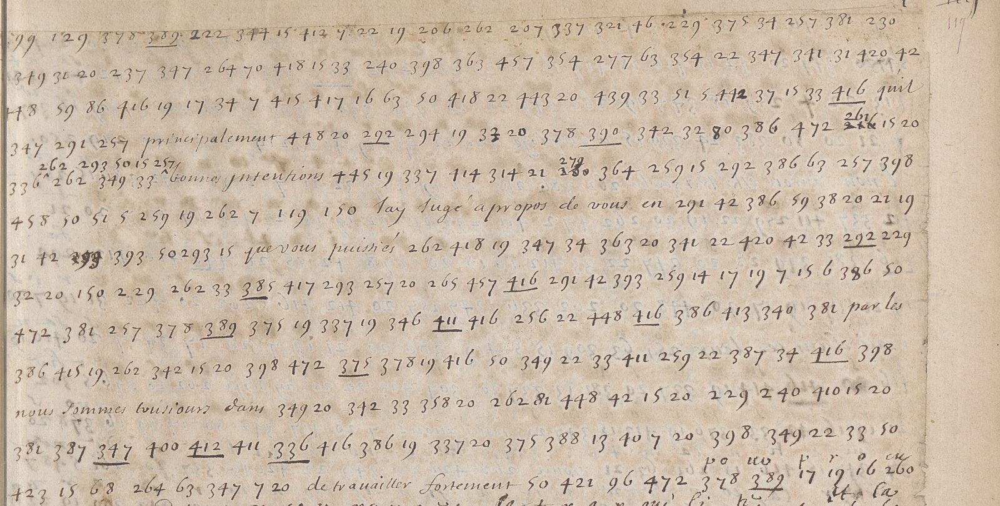

At a glanceKey from adjacent plaintext · complete
- The mémoire
- Armand de Bourbon, prince de Conti, generalissimo of the Paris Fronde, to Geoffroy, marquis de Laigue, his envoy to Archduke Leopold Wilhelm: Paris, 5 March 1649, the day after the Rueil conference opened.
- Where
- Bibliothèque nationale de France, Français 3854 no. 43, ff. 117r–120r (Gallica btv1b52520094g). Catalogue item 26, with nos. 41–42.
- The cipher
- Numbers for letters and syllables: four interleaved alphabets, syllables in blocks of five, a stroke under a number reverses its syllable, numbers from about 99 to 250 are nulls.
- How it was deciphered
- A clerk wrote the plain text between the lines from the thirteenth line on. The key was rebuilt from about 3,300 of his glosses and applied to the twelve lines he left: 264 groups, the address and the purpose of the mémoire.
- What it says
- The conference with the court is only a way to buy time and corn for Paris; “dès le moment qu’il entrera en France, cette conférence se rompra”.
- Still open
- 67 groups whose gloss is faint, blotted or struck; ten syllable values in the opening fixed by sense alone.
Until 14 October 2026 this mémoire shared a page with Conti’s mémoires of 26 and 27 March 1649 (nos. 41–42). Those are in a letter cipher that George Lasry solved, a different cipher, with their own page.
01 The document
BnF Français 3854 is a recueil of Fronde papers from the prince de Conti’s side, January to April 1649. Omont lists no. 43 (ff. 117r–120r) as “Mémoire, avec chiffre et déchiffrement, du prince de Conti, pour un de ses envoyés auprès de l’archiduc”, undated. Its first words, once deciphered, name the envoy: Pour Monsieur de Legue, Geoffroy de Laigue. The last line of f. 120r is glossed à Paris le 5me mars 1649.

02 The code, and twelve lines without a gloss
The clerk who deciphered no. 43 wrote a letter or syllable above almost every number from f. 117r line 13 to the end of f. 120r. He wrote nothing over the first twelve lines. Those 264 groups carry the address and the purpose of the mémoire.
The key, rebuilt from his glosses. Number/gloss pairs were transcribed page by page (by model sub-agents), and the tallies (key43.txt) show a regular design:
- Four interleaved single-letter alphabets: 3–25 run a→z, 28–50 run z→a, 51–73 run a→z again, and about 80–98 run down.
- Syllables in blocks of five, in vowel order: ca ce ci co cu = 256–260, and so on through the consonants, with a second, homophonic series in the gaps.
- Underlining a number reverses its syllable: 385 = ra, underlined 385 = ar.
- Code words: 451 la Reyne, 457 le cardinal, 458 le parlement, 472 l’archiduc, 482 France. The 500s are dates.
- Nulls: the numbers from about 99 to 250, which are never glossed.
The opening, deciphered. Of the 264 groups, 220 take the value the same number has in the glosses; 24 follow from the alphabets or are nulls; 20 are syllables of the second series, fixed from context. The first draft was checked against the rest of the mémoire. Nine of the context and structural values were later found glossed on ff. 117r–120r, all as predicted: 279 de, 364 la, 354 ne (underlined, en), 443 te, 445 su, 37 o, 43 h, 86 n, and 36 p. None was contradicted.
Pour Monsieur de Legue. Parce que nous ne doutons que le cardinal ne donne une mauvaise interprétation à toutes ses actions, et qu’il ne face principalement ses efforts pour mettre l’archiduc dans la défiance de nos bonnes intentions sur le sujet de la conférence que [le] parlement a accordée, j’ay jugé à propos de vous en faire instruire, afin que vous puissiés destourner les mauvais effets des artifices du cardinal, et faire comprendre à l’archiduc que ce pourparler n’a esté causé et résolu que par les retardemens que l’archiduc apporte à nous secourir, et que nous sommes tousiours dans nos mesmes desseins … No. 43, f. 117r, lines 1–12, not glossed by the clerk; deciphered here
Measured. Counting the opening with these values and the body with the clerk’s glosses, the mémoire has 3,367 code groups: 3,300 have a value or are nulls (98.0%, 89 nulls). The 67 without a value are groups whose gloss cannot be read. The key passes the project’s statistical test against random and refitted keys on shuffled text.
03 What the mémoire says
Conti writes to Laigue, who is with Archduke Leopold Wilhelm, to keep the Spanish alliance alive while the Frondeurs negotiate with Mazarin’s side.
- Why the conference happened. The parlement laid the Archduke’s envoy’s proposals (dom Joseph) before the Queen. Mazarin, who saw that real peace would ruin him, proposed a conference to drag things out and to make the Archduke believe the Frondeurs were giving way. “À quoy l’on a employé Vautorte.” Conti would have refused it if the Archduke’s help had been ready and Paris not starving.
- What it bought. No suspension of arms. Saint-Germain lets in a hundred muids of corn a day from Corbeil for as long as the conference lasts, which buys time, “mais fort peu, en vous attendant”.
- Why it cannot succeed. The deputies are “tous gens de bien, dans le zèle de la paix générale et dans une haine irréconciliable pour le ministériat du cardinal”. They cannot give way on Mazarin, whom the parlement has condemned. The generals stayed away on purpose, so as to be free to break the talks at will.
- The promise. “Dès le moment qu’il entrera en France, cette conférence se rompra”, and a truer one will be opened with the Archduke’s own deputies.
- The plea. “Il n’y a plus un seul moment à perdre pour nous secourir.” Laigue is to press for help with all the Archduke’s forces.
The complete edited text of the mémoire is in targets/laigue1649/READING43.md. The Peace of Rueil was signed six days later, on 11 March; Conti’s mémoires of 26–27 March, on their own page, show the generals still pressing the Mazarin article after it.
04 What remains uncertain
- The opening. Ten of its context values (277, 314, 321, 358, 390, 398, 400, 407, 439, 442) never occur in the glossed text, so they rest on sense alone. None of them changes a sentence.
- Four short places in the glosses are faint, blotted or struck, and are left as gaps in the edition: f. 117v l. 18, f. 118v ll. 5–8, f. 119v l. 14 and f. 120r l. 0. The clerk wrote something at f. 119v l. 14 and struck it through, apparently “duc de Lorraine”.
Full texts
The transcription and the decryption of every document on this page, so that the reading can be used and checked. Short files are shown here; all are in the repository.
BnF fr. 3854 no. 43, ff. 117r-120r, 5 March 1649
The Prince de Conti's mémoire for his envoy Geoffroy, marquis de Laigue, to Archduke Leopold Wilhelm, Paris, 5 March 1649: Laigue is to counter the cardinal's account of the conference the parlement had accepted, telling the archduke that the talks were caused only by his delay in sending help and that Conti's party keeps its word to work for peace between the two crowns by removing those who oppose it. The first twelve lines were never glossed and are decoded here; the rest follows the contemporary interlinear decipherment.
Transcription
# BnF fr. 3854 no. 43, f. 117r (canvas 245), lines 0-11: numbers with NO interlinear decipherment. My transcription. # #word = clear text in the ms; ^[...] = interlinear insertion by the writer (numbers); x/y = y written over x. L0: 99 129 378 389_ 222 344 15 412 7 22 19 206 262 207 337 321 46 229 375 34 257 381 230 L1: 349 31 20 237 347 264 70 418 15 33 240 398 363 457 354 277 63 354 22 347 341 31 420 42 L2: 448? 59 86 416 19 17 34 7 415 417 16 63 50 418 22 443 20 439 33 51 5 442 37 15 33 416_ #quil L3: 347 291 257 #principalement 448 20 292_ 294 19 33 20 378 390_ 342 32 80 386 472 261 15 20 L4: 336 ^[262 293 50 15 257] 262 349 33 #bonnes #intentions 445 19 337 414 314 21 279 364 259 15 292 386 63 257 398 L5: 458 50 51 5 259 19 262 7 119 150 #jay #jugé #apropos #de #vous #en 291 42 386 59 38 20 21 19 L6: 31 42 393 50 293 15 #que #vous #puissies 262 418 19 347 34 363 20 341 22 420 42 33 292_ 229 L7: 32 20 150 229 262 33 385_ 417 293 257 20 265 457 416_ 291 42 393 259 14 17 19 7 15 6 386 50 L8: 472 381 257 378 389_ 375 19 337 19 346 411_ 416 256 22 448 416_ 386 413 340 381 #par #les L9: 386 415 19 262 342 15 20 398 472 375_ 378 19 416 50 349 22 33 411 259 22 387 34 416_ 398 L10: #nous #sommes #tousiours #dans 349 20 342 33 358 20 262 81 448 42 15 20 229 240 410 15 20 L11: 381 387 347_ 400 412_ 411 336_ 416 386 19 337 20 375 388 13 407 20 398 349 22 33 50
Transcription
L12: 423= 15= 68= 264= 63= 347= 7= 20= #de #travailler #fortement 50= 421= 96= 472= 378=po 389_=ur 17=p 19=r 16=o 260=cu L13: 386=re 19=r 3=a 22=u 30=x 262=de 31=u 23=x 259=co 22=u 388=ro 15=n 347=ne 20=s 336=la 21=t 19=r 50=a 15=n 382=qui 338=li 416=te 232= 416_=et 364=la L14: 375=pa 42=i 30=x #par #lesloignement 279=de 257=ce 22=u 71=x 382=qui 412=sy 401_=op 378=po 411=se 15=n 21=t 259=co 14=m 342_=me L15: #nous #esperons #aussy #que 472=larchiduc #nestant #pas 256=ca 375=pa 4=b 13=l 7=e 262=de 342=me 15=n 381=que 19=r 50=a 22=u 30=x L16: 419_=as 414=su 385=ra 15=n 257=ce 20=s 382=qui 13=l 349=no 22=u 33=s 51=a 291=fa 42=i 21=t 264=do 15=n 347=ne 19=r 262=de 21=t 34=r 50=a 59=i L17: 416=te 19=r 51=a 421=ue 96=c 349=no 22=u 20=s #naura #point 261_=ad 309=io 31=u 416=te 262=de 294=fo 24=y 50=a 31=u 23=x 347_=en L18: 423=uo 42=y 7=e 20=z 265=du 457=cardinal 416=et #ne #se #sera #pas 336=la 412_=is 411=se 448_=es 4=b 19=l 50=o 15=u 337=ir 34= 51=a 257=ce L19: 381=que 284=ce 21=t #Ennemy 259=co 14=m 345=mu 15=n 340=lu 24=y 50=a 70=u 385=ra 379=pu 291=fa 42=i 386=re 263=di 393=re L20: 414=su 19=r 337=le 17=p 34=r 7=e 416=te 30=x 443=te #que #nous 413=so 15=n 297=ge 16=o 38=n 20=s 50=a 22=u 38=n 256_=ac 259=co L21: 344=mo 262=de 342=me 15=n 21=t 375=pa 19=r 417=ti 260=cu 338=li 386_=er #dans #cette 259=co 15=n 292=fe 386=re 63=n 257=ce 99= 120= L22: 414=su 19=r 337=le 445=su 307=ie 21=t 262=de 336=la 381=que 13=l 363=le 423=uo 22=u 33=s 292=fe 386=re 20=s 393=re 341=ma 19=r 381=que 34=r L23: 50=a 472=larchiduc 381=qui 13=l 20=s 200= 347_=en 16=o 15=n 21=t 448_=es 416=te 337=le 20=s 344=mo 417=ti 8=f 20=s 381=que 13=l 337=le 262=de 33=s L24: 20=s 7=e 42=i 15=n 416_=et 337=le 415=ta 21=t 16=o 22=u 413=so 15=n 32=t 363=le 20=s 5=c 304=ho 448=se 68=s 411=se 339=lo 15=n 257=ce L25: 382=qui 414=su 417=it 214= 245= 199= #ayant #cru #quil #estoit 262=de 336=la 253=bi 347_=en 411=se 50=a 15=n 257=ce L26: 381=que 458=parlement 264=do 15=n 346=na 20=s 21=t 50=a 422=vi 33=s 51=a 451=lareyne 262=de 336=la 387=ri 421=ve 7=e 279=de 264=do 14=m 309=io 448=se L27: 17=p 43=h 416_=et 262=de 448=se 20=s 36=p 19=r 16=o 378=po 412=si 417=ti 37=o 15=n 33=s 200= 219= 457=lecardinal 382=qui #voyoit L28: #bien #que 262=de 257=ce #veritable 50=a 5=c 302=he 343=mi 347=ne 342=me 15=n 21=t 51=a 336=la 375=pa 42=i 23=x 411=se 15=n 414=su 59=i L29: 423=vo 90=i 21=t 410=sa 389=ru 59=y 347=ne #affin #den 262=de 418=to 19=ur 347=ne 67=r 337=le 259=co 22=u 17=p 204= 225= L30: 16=o 31=u 265=du 344=mo 42=i 15=n 20=s 6=d 7=e 38=n 386=re 415=ta 19=r 262=de 19=r 337=le 426=xe 260=cu 417=ti 16=o 15=n L31: 50=a 291=fa 42=i 21=t 17=p 19=r 16=o 378=po 448=se 19=r 22=u 347=ne 259=co 15=n 292=fe 386=re 15=n 257=ce #qui #pust L32: 417=ti 386=re 19=r 337=le 20=s 5=c 304=ho 411=se 20=s 347_=en 339=lo 15=n 300=gu 7=e 22=u 34=r 416_=et 340=lu 24=y
Transcription
L0: 64=do 15=n 346=na 20=s 21=t 339=lo 42=i 412=si 19=r 262=de 262=de 20=s 418=to 22=u 19=r 347=ne 19=r 337=le 20=s 254=bo 1=n L1: 47=ne 20=s 347=ne 20=s 42=i 15=n 416=te 15=n 417=ti 16=o 15=n 20=s 262=de 472=larchiduc 347_=en 349=no 22=u 33=s 291=fa 42=i 410=sa 15=n 2=? L2: 13=so 22=u 4=b 259=co 15=n 347=ne 19=r 262=de 349=no 22=u 20=s 386=re 336=la 5=c 302=he 19=r #denos 17=d 19=r 16=o 307=ic L3: ?7=? 21=t 20=s 50=a 383=quo 24=y 339=lo 15=n #a #employe 420=ua 22=u 418=to 19=r 416=te 219= 225= 240= 219= 250= L4: #il #nous #auroit #este #tres #facile 262=de 386=re 295=fu 411=se 19=r 257=ce 32=t 21=t 7=e 259=co 15=n 292=fe 386=re 15=n 257=ce L5: 12=si 337=le 411=se 259=co 22=u 19=r 20=s 262=de 472=larchiduc 411=se 295=fu 21=t 32=t 19=r 16=o 22=u 421=ve 17=p 19=r 7=e 20=s 21=t L6: ?16_=et 381=que 349=no 22=u 20=s 347=ne 22=u 33=s 412=si 16=o 15=n 20=s 378=po 42=i 15=n 21=t 448_=es 416=te 412=si 294=fo L7: ?9=? 21=t 17=p 19=r 7=e 20=s 448=se 20=s 262=de 336=la 347=ne 257=ce 20=s 412=si 416=te 262=de 20=s 422=vi 31=u 19=r 7=e 2=? L8: #mais #dans #ces #deux 259=co 63=n 309=io 15=n 5=c 419=tu 386=re 20=s 21=t 19=r 7=e 20=s 17=p 34=r 7=e 20=s 410=sa 1=n L9: 16=te 20=s 416_=et 414=su 19=r 337=le 20=s 381=que 13=l 337=le 20=s 307=ie 423=vo 22=u 20=s #ay #desja 262=de 20=s 376=pe 5=c 302=he L10: ?1=t 19=r 16=o 42=i 33=s 376=pe 19=r 413=so 15=n 347=ne 20=s #nous #avons 7=e 20=s 417=ti 342=me 50=a 17=p 19=r 16=o 378=po 20=s L11: ?7=? 347=ne 15=n 416=te 15=n 261=da 63=n 21=t #pour 262=de 423=vo 20=s 349=no 22=u 421=ve 13=l 337=le 20=s 261=de 5= 487=mon L12: ?7=pe 416=che 19=r 336=la 259=co 15=n 292=fe 386=re 15=n 257=ce 50=a 293=fi 15=n 262=de 264=do 15=n 347=ne 19=r 347_=en 259=co 19=r 22=? 1=? L13: ?5?=? 376=pe 22=u 262=de 416=te 14=m 17=p 20=s 50=a 472=larchiduc 262=de 448=se 342=me 21=t 32=t 386=re 347_=en 448_=es 415=ta 21=t L14: 262=de 421=ve 348=ni 19=r 50=a #nous #et #de #pouvoir 257=ce 376=pe 15=n 261=da 15=n 21=t 291=fa 42=i 386=re 414=su 4=b L15: 412=si 20=s 416=te 19=r #cette 9=g 19=r 50=a 15=n 262=de 422=vi 13=l 337=le 310=iu 20=s 381=que #a #ce #que #nos 294=fo 19=r 25=ce L16: ?0=s 309=io 42=i 15=n 416=te 20=s 347_=en 50=a 24=y 7=e 15=n 21=t 337=le 421=ve 363=le 4=b 339=lo 260=cu 20=s 336=la 259=co L17: ?5=n 292=fe 386=re 15=n 257=ce #a #donc #este 256_=ac 257=ce 17=p 416=te 7=e 341=ma 412_=is 50=a 421=ve 96=c #cette 259=co 63=n L18: ?63=di 417=ti 16=o 15=n #que #lon #y 21=t 19=r 50=a 42=i 416=te 385=ra 349=no 15=n 448=se 22=u 13=l 7=e 342=me 15=n 21=t 265=du 38=re L19: ?78=?o 20=s #de #ce 388=ro 24=y 50=a 22=u 342=me #mais 262=de 336=la 375=pa 42=i 23=x 297=ge 347=ne 385=ra 337=le #par #ou L20: ?72=larchiduc 378=po 22=u 19=r 385=ra 310=iu 297=ge 19=r 381=que 15=n 257=ce 336=la #mesmes 349=no 22=u 33=s 423=vo 22=u 339=lo 15=n 2=s L21: #?ien 416=te 344=mo 42=i 9=g 15=n 7=e 19=r 381=que 349=no 20=s 21=t 19=r 7=e 262=de 33=s 20=s 7=e 59=i 15=n #va #tousiours L22: ?0=a 347=ne 387=ri 347_=en 291=fa 42=i 386=re 20=s 50=a 15=n 33=s 21=t 19=r 51=a 42=i 416=te 34=r 50=a 421=ve 5=c 381=que L23: 40=lu 24=y 51=a 42=i 15=n 412=si #que #nous #nous 29=y 413=so 14=m 342=me 20=s 7=e 15=n 296=ga 297=ge 25=z 99= 20= L24: 19= 336=la 420=ua 15=n 415=ta 297=ge 17=p 19=r 7=e 411=se 15=n 21=t #qui #nous 386=re 422=vi 7=e 15=n 21=t 262=de 259=co 1=n L25: ?92=fe 386=re 19=r #est 381=que 347=ne 291=fa 42=i 20=s 50=a 15=n 21=t 51=a 22=u 260=cu 347=ne 414=su 20=s 376=pe 15=n 412=si 16=o 15=n L26: ?61=?a 19=r 342=me 33=s 416_=et 7= 20= 415=ta 38=n 21=t #au #contraire 347_=en 46=e 33=s 415=ta 21=t 262=de 15=n 21=t L27: ?9=? 7=e 17=p 19=r 46=e 15=n 6=d 19=r 7=e 257=ce 3?9= 309=io 22=u 34=r 342=me 20=s 342=me 381=que 13=l 381=que 5=c 304=ho 41=se L28: ?62=de 294=fo 19=r 21=t 259=co 15=n 412=si 262=de 385=ra 4=b 13=l 7=e 378=po 389_=ur 291=fa 42=i 386=re 347_=en 21=t ?= L29: ?9=r 7=e 34=r 262=de 20=s 422=vi 31=u 386=re 20=s 50=a 375=pa 387=ri 20=s 16=o 22=u 21=t 19=r 7=e #quelque L30: 59=o 15=n 423=vo 42=y 20=s 381=que 349=no 20=s 21=t 19=r 16=o 22=u 376=pe 33=s 294=fo 15=n 21=t #et #les #petits
Transcription
L0: 411=se 259=co 389_=ur 20=s #des 375=pa 42=i 20=s 50=a 15=n 33=s #les 343=mi 348=ni 20=s 21=t 19=r 7=e 68=s 262=de 410=sa 42=i L1: 15=n 21=t 297=ge 19=r 341=ma 42=i 15=n #nous 256_=ac 259=co 19=r 262=de 15=n 21=t 262=de 336=la 42=i 20=s 448=se 19=r 421=ve L2: 348=ni 19=r 262=de 259=co 19=r 4=b 7=e 42=i 13=l 257=ce 15=n 21=t 345=nu 42=i 6=d 20=s 262=de 4=b 13=l 7=e 6=d 20=s 5=c 301=ha L3: 381=que 309=io 389_=ur 50=a 259=co 14=m 342=me 15=n 257=ce 19=r 262=de #celuy #cy #qui #est #le 17=p 19=r 7=e 343=mi L4: 7=e 19=r 262=de 336=la 259=co 15=n 292=fe 386=ra 15=n 257=ce #tant #quelle 265=du 386=re 385=ra 257=ce #qui L5: #nous #peut #faire 259=co 22=u 337=le 19=r #encor #quelque 416=te 14=m 17=p 20=s #mais #a 263=di L6: 386=re 337=le 22=u 19=r 50=a 24=y 294=fo 19=r 21=t 376=pe 22=u 347_=in 423=vo 22=u 20=s 415_=at 416=te 15=n 261=da 15=n 21=t L7: 99= 240= 250= #quand #a 337=le 8=f 292=fe 21=t 262=de 336=la 259=co 15=n 292=fe 386=ra 15=n 257=ce #vous L8: #ferez 347_=in 416=te 15=n 6=d 19=r 7=e 50=a 472=larchiduc #quayant #este #les 341=ma 42=i 20_=s 21=t 19=r 7=e 20=s 262=de 336=la L9: 349=no 343=mi 346=na 417=ti 16=o 15=n #des 262=de 379=pu 416=te 20=s #tant 265=du 458=parlem 381=que 262=de 20=s 50=a 22=u L10: 21=t 19=r 7=e 20=s 259=co 14=m 375=pa 9=g 15=n 42=i 7=e 33=s 413=so 22=u 421=ve 385=ra 42=i 347=ne 20=s #et #le 375=pa 19=r 417=ti L11: #le #plus #juste 50=a 24=y 51=a 15=n 21=t #facilement 17=p 19=r 7=e 420=va 340=lu #partout 257=ce 20=s 262=de L12: 379=pu 416=te 20=s #de #plus #estant 418=to 22=u 20=s 297=ge 15=n 33=s 262=de 253=bi 347_=in #dans #le 28= 4= 25=z 7=e L13: 337=le 262=de 336=la 375=pa 42=i 23=x 297=ge 347=ne 385=ra 337=le #et #dans #une 301=ha 59=i 347=ne 387_=ir 386=re L14: 259=co 15=n 258=ci 338=li 50=a 4=b 13=l 7=e #pour #le 343=mi 348=ni 20=s 416=te 387=ri 50=a 21=t 265=du #cardinal 336=la 259=co 15=n L15: 292=fe 386=ra 15=n 257=ce #ou #tirera 347_=in 339=lo 15=n 300=gu 7=e 22=u 19=r 16=o 32=n 411=se 388=ro 14=m 376=pe 385=ra #selon L16: #ce #que 337=le 253=bi 347_=in 262=de 349=no 20=s 291_=af 291=fa 42=i 386=re 20=s #et #les 17=p 19=r 16=o 307=ne 21=t 33=s L17: 262=de 336=la 375=pa 42=i 23=x #que #nous #voulons 21=t 19=r 50=a 59=i 416=te 19=r 50=a 421=ve 96=c 472=larchiduc #nous L18: 20=s 7=e 14=m 4=b 13=l 55=e 388=ro 15=n 21=t #requerir #sans #quil #sy #puisse 387=ri 347_=in 259=co 15=n 5=c 340=lu L19: 386=re 412=si #le #cardinal 347=ne 411=se 386=re 417=ti 393=re #auquel #cas #en #y 375_=ap 376=pe 13=l 336=la 15=n 21=t 472=larchiduc L20: 337=le 21=t 19=r 50=a 42=i 416=te #de 336=la 375=pa 42=i 23=x 297=ge 347=ne 385=ra 337=le 411=se 259=co 15=n 5=c 340=lu 385=ra L21: #sans #difficulte #mais #comme #il 348=ni 50=a 51=a 22=u 260=cu 15=n 338=li 7=e 22=u 262=de 20=s 376=pe L22: 386=re 19=r #que #la #seule 264=do 22=u 257=ce 31=u 34=r #et #la 385=ra 42=i 413=so 15=n 262=de 20=s 385_=ar 34=r 27=?st L23: 340=lu 24=y #persuadent #de 382=qui 416=te 19=r #les 291_=af 291=fa 42=i 386=re 20=s #et #quil #y 291=fa 22=u L24: 6=d 19=r 50=a #employer 336=la 294=fo 19=r 257=ce #aussy #est #il 42=? 14=m 378=po 20=s 412=si 4=b 13=l 7=e L25: 381=que 257=ce 21=t 34=r 51=a 42=i 416=te 347_=in 337=le 415=ta 21=t 16=o 22=u 338_=il 7=e 20=s 21=t #puisse L26: #avoir 50=a 22=u 260=cu 15=n 292_=ef 329=fe 21=t 210= 229= 240= 99= #vous 292=fe 386=re 20=s 7=e 15=n L27: 259=?o 386=re 393=re 341=ma 19=r 381=que 34=r 50=a 472=larchiduc #sur 257=ce 21=t 385_=ar 417=ti 5=c 13=l 7=e #que #le L28: 378=po 22=u 423=vo 42=i 19=r #quon 51=a 264=do 15=n 347=ne 50=a 22=u 23=x 262=de 379=pu 416=te 20=s 262=de
Transcription
L0: 21=t 19=r 50=a 42=i 416=te 34=r #ne #doit #en #aucune #sorte #faire 345_=ap 17=p 19=r 7=e 302=he 15=n 262=de 19=r L1: #quils #puissent 259=co 15=n 5=c 13=l 22=u 386=re #puisque #quand #ils #seroient #autant 5=c 19=r 7=e 50=a L2: 419=tu 386=re 20=s 265=du 457=cardinal #quils #sont #gens #de #bien #et #devoues #a #la 254=bo 15=n 347=ne 256=ca 22=u L3: 411=se #ils #nont #pas 336=la 379=pu 412_=is 410=sa 15=n 257=ce 262=de 411=se 386=re 336=la 5=c 302=he L4: 34=r 262=de 336=la 344=mo 42=i 15=n 6=d 19=r 7=e 5=c 304=ho 411=se #sur 13=l 50=a 19=r 417=ti 5=cle 4= 7= 265=du 457=cardin L5: 421=m 22=u 382=qui 13=l 7=e 20=s 21=t 259=co 15=n 261=da 14=m 347=ne 375=pa 19=r 458=parlem #et #que #selon L6: 337=le 20=s 339=lo 42=i 23=x 416_=et 338=li 15=n 20=s 417=ti 419=tu 417=ti 16=o 15=n #dont 50=a 22=u 300=?n 20=s L7: 416=te 259=co 14=m 375=pa 9=g 15=n 42=i 7=e 337=le 20=s 347=ne 376=frc 22=u 421=m 15=n 21=t 306=ia 341=mai 59= 33=s #non L8: #pas 256=ca 20=s 448=se 19=r #mais #seulement 291_=af 294=fo 42=i 4=b 13=l 90=i 19=r 22=l? 15=n #de #sa 385_=au L9: 386=re 21=t 20=s 200= 250= #pour 344=mo 15=n 375=pa 19=r 417=ti 260=cu 338=li 7=e 19=r 416_=et 257=ce 340=lu 24=y 262=de L10: 342=me 20=s 412=si 7=e 22=u 19=r 20=s 337=le 33=s 297=ge 347=ne 385=ra 22=u 30=x 307=ie 20=s 417=ti 342=me 382=qu 472=larchiduc L11: ?0=? 22=u 385=ra 418=to 31=u 21=t 414=su 307=ie 32=t 262=de 411=se 339=lo 22=u 7=e 19=r 262=de 257=ce 382=que 348=ni 344=mo L12: ?4=y 199= 353=ny 337=le 20=s 50=a 22=u 21=t 19=r 7=e 33=s #navons #pas #voulu 410_=as 412=si 20=s 416=te 19=r 50=a L13: ?36=la 259=co 15=n 292=fe 386=ra 15=n 257=ce #ce #que #nous #avons #fait #pour 17=p 13=l 22=u 412=si 7=e 70=u 19=r 20=s L14: ?86=re 42=i 413=so 15=n 33=s #dont #les #apparences #sont #de #faire 423=vo 42=i 19=r 301=ha 22=u 416=te 342=me L15: ?5=? 21=t #a #tout #le #monde #que 349=no 20=s 21=t 19=r 7=e 42=i 15=n 416=te 386=re 20=s 21=t #ne #nous 259=co 15=n L16: 265=du 42=i 21=t #point #et #que #si #nous 7=e 15=n 50=a 423=vo 63=n 33=s #quelques 22=u 15=n 20=s 50=a 342=me L17: 346=na 297=ge 19=r #nous 347_=en 336=la 412_=is 413=so 15=n 20=s #au 458=parlem 262=de 20=s 262=de 379=pu 416=te 33=s 265=du L18: 381=que 13=l #nous 413=so 14=m 342=me 20=s 410_=as 414=su 386=re 20=s 336=la 262=de 258=ci 412=si 16=o 15=n 347=?ne 417=ti 7=e L19: 386=re 240= #cequi 7=e 20=s 415=ta 4=b 338=li 21=t 42=i 258=ci 349=no 20=s 21=t 19=r 7=e 386=re 379=pu 415=ta L20: 417=ti 16=o 15=n #nous #gaigne 5=c 19=r 7=e 263=di 21=t #dans #les 17=p 19=r 16=o 422=vi 15=n 257=ce 20=s L21: #et #affermit #la #justice 262=de 15=n 16=o 20=s 32=t 34=r 7=e 256=ca 22=u 411=se #mais #les #raisons L22: #solides #et #effectives #qui 349=no 22=u 20=s 7=e 33=s 339=lo 42=i 9=g 15=n 7=e 63=n 21=t 265=du #pour 375=pa 19=r L23: 337=le #sont #que #nous #avons #voulu 262=de 342=me 22=u 386=re 19=r 347_=en 7=e 20=s 415=ta 21=t 262=de 338= 337=le L24: 388=ro 14=m 17=p 19=r 7=e #toutes #les 294=fo 42=i 20=s 381=que 254=bo 15=n 349=no 22=u 33=s 411=se 14=m 4=b 13=l 7=e L25: 388=ra 42=i 21=t 416_=et 381=que #nous 310=iu 297=ge 387=ro 16=o 15=n 20=s 50=a 17=p 19=r 16=o 378=po 20=s #pour L26: 337=le 20=s 415=ta 4=b 13=l 42=i 33=s 448=se 342=me 15=n 21=t 262=de 336=la 375=pa 42=i 23=x 262=de 20=s 262=de 22=u 30=x L27: 259=co 22=u 388=ro 15=n 347=ne 33=s 250= 50=a 24=y 51=a 15=n 21=t 347_=en 257=ce 336=la 270=eu 7=e 20=s 296=ga 19=r 6=d L28: #principalement 50=a 416=te 344=mo 42=i 9=g 15=n 7=e 19=r 51=a 472=larchiduc #que #nous #ne 347=ne
Transcription
L0: 9=g 13=l 42=i 297=ge 16=o 15=n 20=s #pas #une #seule 342=me 414=su 386=re? #que #nous #ne 336=la 17=p 19=r 7=e 348=ni L1: 16=o 15=n 33=s #pour 340=lu 24=y 291=fa 42=i 386=re 259=co 15=n 347=ne 21=t 19=r 7=e #questant 22=u 348=ni 20=s L2: 262=de 375=pa 388=ro 337=le #pour 336=la 375=pa 42=i 23=x 297=ge 347=ne 385=ra 337=le #nous #nous 259=co 15=n L3: 448=se 19=r 423=vo 86=n 20=s 347_=en 22=u 15=n 7=e 20=s 415=ta 21=t 16=o 70=u 387=ri 347_=en #ne #sçauroit L4: 349=no 22=u 20=s 16=o 4=b 338=li 297=ge 19=r 50=a 340=lu 24=y 347_=en 341=ma 15=n 381=que 19=r 199= 205= 200= L5: #sur 418=to 22=u 21=t 257=ce 258=ci 423=vo 22=u 20=s #pourres 410_=as 414=su 386=re 19=r 378=po 412=si 417=ti L6: 421=ve 342=me 15=n 21=t 472=larchiduc #premierement #que #le 376=pe 22=u 17=p 13=l 7=e 262=de 375=pa 387=ri L7: 20=s #estant #[struck-word] #dispose #fort 17=p 19=r 7=e 20=s 411=se 88= #parla 263=di 448=se 32=t 21=t 7=e 262=de 20=s L8: 422=vi 31=u 19=r 7=e 33=s #et #voulant #quon 337=le 342=me 346=na 20=s 21=t 50=a 22=u 259=co 14=m 251=ba 32=t L9: 257=ce 381=que #nous #navons #pas 5=c 19=r 22=u 262=de 423=vo 42=i 19=r 301=ha 25=z 50=a 34=r 262=de 19=r 24=y L10: 336_=al 364=la 15=n 21=t 279=de 336=la 5=c 305=hu 416=te #des 418=to 22=u 32=t 337=le 375=pa 19=r 417=ti 200= 250= L11: #nous #avons 256_=ac 257=ce 17=p 416=te 22=u 15=n 7=e 259=co 15=n 292=fe 386=ra 38=n 257=ce 378=po 389_=ur 378=po 22=u L12: 423=uo 42=i 19=r 422=ui 31=u 19=r 7=e 375=pa 67= 343=mi 349=no 20=s 348_=in 259=co 344=mo 263=di 416=te 20=s #encore L13: 22=u 15=n 376=pe 70=u 262=de 416=te 14=m 17=p 20=s #et #donner #lieu 50=a 472=larchiduc 262=de #nous 411=se 259=co L14: 22=u 387=ri 19=r 205= 209= 99= 416_=et 347_=in 411=se 259=co 15=n 6=d 338=li 270=eu #que 336=la 263=di 416=te L15: 259=co 15=n 292=fe 386=ra 38=n 257=ce 7=e 20=s 415=ta 15=n 21=t 282=co 14=m 378=po 411=se 7=e #de #nostre #coste #do L16: 297=ge 15=n 20=s 262=de 253=bi 347_=in 354=ne 378=po 22=u 420=ua 15=n 32=t 262=de 17=p 13=l 22=u 20=s 51=a 254=bo 31=u L17: 417=ti 19=r 50=a 387=ri 347_=in 265=du 385=ra 15=n 21=t 337=le 343=mi 348=ni 20=s 416=te 387=ri 415_=at 265=du 457=cardinal L18: 259=co 15=n 261=da 14=m 15=n 7=e #par #le 458=parlem 416_=et 344=mo 29=y 348=ny 342=me 20=s 412=si 270=eu 19=r 33=s #les L19: 297=ge 347=ne 385=ra 22=u 23=x 348=ni 50=a 24=y 51=a 15=n 21=t #point 423=no 22=u 340=lu 7=e 20=s 21=t 19=r 7=e 50=a 293=fi L20: 15=n 200= 262=de 15=n 262=de 342=me 22=u 386=re 19=r #tousiours #les 341=ma 42=i 20=s 21=t 19=r 7=e 33=s 205= 99= L21: 416_=et 262=de 349=no 22=u 20=s 386=re 413=so 22=u 6=d 19=r 7=e 50=a 421=ue 96=c 337=le 20=s 297=ge 15=n 33=s 262=de 253=bi 347_=in L22: 265=du 458=parlem 50=a 22=u 375=pa 19=r 417=ti #qui #nous #sembleroit 337=le 17=p 13=l 22=u 20=s 50=a 17=p 19=r 16=o L23: 378=po 20=s #pour 292_=ef 292=fe 5=c 419=tu 386_=er #les 254=bo 15=n 20=s 262=de 33=s 411=se 42=i 15=n 20=s 382=qui #nous L24: #sont 259=co 14=m 345=mu 15=n 20=s 50=a 421=ue 5=c 472=larchiduc #vous #pouvez 410_=as 414=su 386=re 19=r 472=larchiduc #et L25: #luy #en 264=do 15=n 347=ne 19=r 342=ma 375=pa 388=ro 337=le 426_=ex 17=p 19=r 7=e 20=s 411=se 381=que 262=de 20=s 337=le L26: 344=mo 342=me 15=n 21=t #quil 347_=en 32=t 19=r 7=e 385=ra 354_=en 482=france #cette 229= 259=co 15=n 292=fe 386=ra 15=n 257=ce L27: #se 388=ro 14=m 17=p 19=r 50=a 347_=en 51=a 24=y 50=a 15=n 21=t 262=de 20=s 344=mo 42=y 7=e 15=n 33=s #leurs #et L28: 257=ce 19=r 415=ta 42=i 15=n 20=s #et #quon #en 259=co 14=m 342=me 15=n 257=ce 385=ra 22=u 347=ne 200= 50=a 22=u 21=t 19=r L29: 7=e 229= #plus #sincere #et 17=p 13=l 22=u 33=s 410_=as 414=su 386=re 7=e 209= 50=a 421=ue 5=c 381=que
Transcription
L0: 411=se 20=s 262=de 379=pu 416=te 33=z #qui #nous 264=do 15=n 347=ne 385=ra 253=bi 347_=en 418=to 20=s 21=t 336=la L1: 75=pa 42=i 30=x 210= 99= 205= #Mais #comme #nous #sommes #extraordinairement L2: 7= 19=r 7=e 20=s 411=se 33=z 416_=et 381=que 412=si 337=le 411=se 259=co 22=u 19=r 20=s #nisbui #aussy L3: 7= 34=r 16=o 14=m 36=p 21=t 381=que 337=le 252=be 413=so 42=i 15=n 381=que #nous 347_=en 50=a 423=vo 15=n 20=s L4: 7=e 33=s 21=t 9=g 19=r 51=a 15=n 6=d #les 291_=af 330=fa 42=i 386=re 20=s #pourroient 418=to 14=m 252=be L5: 19=r 204= 347_=en 31=v 347=ne 426_=ex 21=t 19=r 7=e 343=mi 416=te 264=do 22=u 230=s 387=? 347_=en L6: #neseroit 256=ca 375=pa 4=b 13=l 7=e 262=de 337=le 20=s 386=re 337=le 421=ue 19=r 203= 17=p 19=r 7=e 20=s L7: 411=se 33=s #mais #sans 386=re 336=la 5=c 10=h 7=e 472=l'archiduc 205= 414=su 19=r 257=ce 382=qui 13=l 348=ni 50=a L8: 207= 17=p 13=l 22=u 33=s 31=v 15=n 20=s 270=eu 13=l 207= 344=mo 342=me 15=n 21=t 50=a 17=p 7=e 19=r 6=d 34=r 7=e L9: #pour #nous 411=se 259=co 22=u 387=ri 19=r 416_=et 382=qui 13=l 376=pe 22=u 21=t 253=bi 347_=en 310=iu 297=ge L10: 19=r 223= 259=co 14=m 253=bi 7=e 15=n 349=no 20=s 347=ne 257=ce 20=s 412=si 416=te 33=z 226= 413=so 15=n 21=t L11: 50=a 22=u 9=g 342=me 15=n 416=te 7=e 20=s 227= 262=de 379=pu 42=i 20=s 337=le 560=xxij 518=feburier #que #je L12: #luy 262=de 20=s 376=pe 5=c 43=h 7=e 378=po 389_=ur 340=lu 24=y 263=di 386=re #quelles #estoient L13: 21=t 19=r 7=e 20=s 17=p 34=r 7=e 33=s 410=sa 15=n 416=te 20=s 250= 413=so 13=l 338=li 258=ci 416=te 33=z #les L14: 7=e 15=n 259=co 386=re 261=da 342=me 347=ne 19=r 16=o 22=u 262=de 15=n 423=no 24=u? 7=e 19=r 416_=et 509= 200= L15: 50=a 22=u 20=s 412=si #auquel #selon #et #jusques #ou #vous 337=le 310=iu 297=ge 386=re 20=s 50=a L16: 17=p 19=r 16=o 378=po 33=s #vous 264=do 15=n 347=ne 386=re 25=z 375=pa 19=r 21=t 262=de 257=ce 33=s 5=c 10=h 16=o L17: 411=se 20=s 250= 413=so 13=l 338=li 258=ci 21=t 7=e 20=s #disse #de #nous 291=fa 42=i 386=re 411=se 259=co 22=u L18: 387=ri 19=r #de #toutes 337=le 22=u 19=r 20=s 294=fo 19=r 257=ce 20=s 264=do 15=n 21=t #nous #avons L19: 22=u 15=n 7=e 347=ne 257=ce 33=s 412=si 416=te 7=e 15=n 417=ti 7=e 386=re 16=o 22=u 32=t 19=r 7=e 381=que #cela L20: 50=a 5=c 10=h 7=e 343=mi 347=ne 385=ra 17=p 13=l 22=u 418=to 33=s 21=t 50=a 22=u 15=n 256_=ac 259=co 344=mo 262=de L21: 342=me 15=n 21=t 297=ge 347=ne 385=ra 13=l 206= 225= #que #sil 411=se 21=t 19=r 16=o 22=u 421=ve L22: 381=qu 13=l 381=que 263=di 8=f 293=fi 260=cu 13=l 416=te #de #la 375=pa 19=r 21=t 262=de 472=larchiduc #ce #que #je L23: #ne #veux #pas 5=c 19=r 16=o 42=i 386=re 226= 50=a 347=ne #point 347_=en 21=t 19=r 7=e 34=r
Transcription
L0: 410=sa 15=n 20=s 21=t 19=r 50=a 42=i 21=t 7=e 50=a 420=na 15=n 257=ce 20=s 347_=en #toufiours 373=oo 20=s 17=p 19=r L1: 16=o 307=in 21=t 33=s 209= 416_=et 291=fa 42=i 416=te 20=s #en #sorte #quil 347=ne 417=ti 347_=en 157=ne L2: 375=pa 20=s 50=a 257=ce 336=la #que #nous 347=ne 413=so 24=y 16=o 15=n 20=s 229= 411=se 259=co 22=u 19=r L3: 22=u 33=s 230= 386=re 42=i 416=te 385=ra 15=n 21=t #encor 50=a 472=l'archiduc #la 375=pa 388=ro 13=l 337=le 381=que L4: 307=in 340=lu 29=y 50=a 24=y 291=fa 42=i 5=c 21=t #donner #par 418=to 22=u 33=s 342=me 20=s 7=e 15=n L5: 423=no 77=y 55=e 20=s 250= 381=que 307=in 336=la 20=s 414=su 386=re 382=qui 13=l 411=se 385=ra 410=sa 417=ti 20=s L6: 291=fa 42=i 5=c 21=t 232= 414=su 19=r #tout 257=ce 382=qui 13=l 207= 20=s 5=c 50=a 22=u 388=ro 42=i 21=t L7: 413=so 22=u 301=ha 42=i 416=te 19=r 209= 416_=et #que 259=co 15=n 20=s 377=pi 385=ra 15=n 21=t 540=lu 24=y 416_=et L8: 344=mo 29=y 262=de 418=to 22=u 416=te 20=s 349=no 33=s 294=fo 19=r 257=ce 20=s 210= 50=a 336=la 375=pa 42=i 23=x L9: 262=de 33=s 209= 17=p 7=e 22=u 17=p 13=l 55=e 20=s #de 13=l 270=eu 388=ro 376=pe 416_=et 50=a 340=lu 348=ni L10: 16=o 15=n 410_=as 414=su 386=re 7=e 416_=et 292=fe 19=r 342=me 262=de 20=s 6=d 7=e 22=u 23=x 259=co 22=u L11: 388=ro 15=n 38=n 7=e 20=s 232= #Il #ny #a 387=ri 347_=en 262=de 344=mo 15=n 259=co 20=s 416=te 382=qui L12: 413=so 42=i 21=t 256=ca 375=pa 4=b 13=l 7=e 262=de 344=mo 4=b 13=l 42=i 297=ge 19=r 50=a 347=ne 375=pa 33=s L13: 259=co 15=n 5=c 13=l 22=u 19=r 7=e 209= 257=ce 381=que 307=in 342=me 17=p 19=r 16=o 342=me 21=t 20=s 50=a 22=u L14: 20=s 412=si 210= 262=de 472=larchiduc 50=a 375=pa 387=ri 20=s 337=le 543=5me 519=mars1649
Decryption
# No. 43: Conti's mémoire for Laigue, 5 March 1649 (BnF fr. 3854 no. 43, ff. 117r–120r), read in full
No. 43 is Conti's mémoire *pour Monsieur de Legue*: Geoffroy, marquis de Laigue, Conti's envoy to Archduke
Leopold Wilhelm. It runs to seven pages, ff. 117r–120r (Gallica canvases 245–251).
- It is written in a numerical code of letters and syllables, with clear words mixed in.
- A contemporary hand deciphered it between the lines from f. 117r l. 12 onward.
- **The first twelve lines, 264 groups, were never deciphered.** They are the address and the purpose of the
mémoire. This file reads them.
## How the code works (rebuilt here)
The key was rebuilt from the glossed groups that agents transcribed from ff. 118r, 118v
and 117v (`n43/pairs_c246.txt`, `pairs_c247.txt`, `pairs_c248.txt`: 1,485 glossed groups). `n43/buildkey.py` tallies them into
`n43/key43.txt`.
- **Single letters: four interleaved alphabets.**
| Numbers | Direction | Examples |
|---|---|---|
| 3–25 | a→z | a 3, b 4, … l 13, … z 25 |
| 28–50 | z→a | o 37, n 38, i 42, e 46, a 50 |
| 51–73 | a→z | e 55, i 59, s 68, u 70, x 71 |
| about 80–98 | z→a | t 80, s 81, n 86, i 90, c 96 |
- **Syllables: consonant blocks of five, in vowel order a e i o u.** For example b 251–255, c 256–260,
d 261–265, f 291–295, g 296–300, h 301–305, l 336–340, m 341–345, n 346–350, p 375–379, q 380–384,
r 385–389, s 410–414, t 415–419, v 420–424.
- A second, homophonic series fills the gaps: do 277, de 279, je 314, gu 321, ne 354, me 358, la 364, ru 390,
pu 400, se 439, ti 442, te 443, su 445.
- **An underlined number reverses its syllable.** 385 = ra, 385̲ = ar; 416 = te, 416̲ = et; 347̲ = en.
- **Nulls:** numbers roughly 99–250, never glossed anywhere (99, 119, 129, 150, 199, 200, 206, 207, 210, 219,
222, 225, 229, 230, 237, 240, 250).
- **Code words:** 457 = cardinal, 458 = parlement, 472 = l'archiduc.
## Where the 264 values come from (`n43/decode_opening.py`)
- **220 groups:** the majority gloss the same number carries on the glossed pages.
- **24 groups:** fixed by the alphabet structure (37, 38, 46, 59, 80, 81, 86) or are nulls.
- **20 groups:** second-series syllables fixed by context in the opening itself.
- They agree with one another and with the block layout: do 277 and de 279 share a block, as do me 358 and
la 364.
- These are the least certain values. None changes the sense of a sentence.
- A targeted scan of ff. 119r–120r **confirmed three of them from the contemporary glosses: 279 = de, 364 = la,
354 = ne** (underlined 354 = en). None was contradicted; the other 17 do not occur in the glossed text
(`n43/scan_119_120.md`).
## Text
Clear words in the manuscript are in roman; the deciphered text is in *italics*.
> *Pour Monsieur de Legue. Parce que nous ne doutons que le cardinal ne donne une mauvaise interprétation à toutes
> ses actions, et* qu'il *ne face* principalement *ses effors pour mettre l'archiduc dans la défiance de nos*
> bonnes intentions *sur le sujet de la conférence que [le] parlement a accordée,* j'ay jugé à propos de vous en
> *faire instruire, afin* que vous puissiés *destourner les mauvais effets des artifices du cardinal, et faire
> comprendre à l'archiduc que ce pourparler n'a esté causé et résolu que* par les *retardemens que l'archiduc
> apporte à nous secourir, et que* nous sommes tousiours dans *nos mesmes desseins, sans que rien puisse altérer
> les paroles que nous a[vons données] …*
## The whole mémoire, ff. 117r–120r (edition)
Sources for this text:
- **f. 117r, first 12 lines:** decoded here (above).
- **Everything after that:** the contemporary interlinear decipherment. It was transcribed group by group
(`n43/pairs_c245.txt` … `pairs_c251.txt`, about 3,300 glossed groups) and joined by `n43/assemble.py`
(`n43/body_assembled.txt`).
Editorial conventions:
- Spelling follows the decipherer.
- Accents, apostrophes and punctuation are modern.
- [ ] marks letters supplied; […] marks a gap; (?) marks a doubtful reading.
> **Pour Monsieur de Legue.** Parce que nous ne doutons que le cardinal ne donne une mauvaise interprétation à
> toutes ses actions, et qu'il ne face principalement ses efforts pour mettre l'archiduc dans la défiance de nos
> bonnes intentions sur le sujet de la conférence que [le] parlement a accordée, j'ay jugé à propos de vous en
> faire instruire, afin que vous puissiés destourner les mauvais effets des artifices du cardinal, et faire
> comprendre à l'archiduc que ce pourparler n'a esté causé et résolu que par les retardemens que l'archiduc
> apporte à nous secourir, et que nous sommes tousiours dans nos mesmes desseins, sans que rien puisse altérer les
> paroles que nous a[vons données] de travailler fortement pour procurer aux deux couronnes la tranquillité et la
> paix par l'esloignement de ceux qui s'y opposent. Comme nous espérons aussy que l'archiduc, n'estant pas capable
> de manquer aux assurances qu'il nous a fait donner de traiter avec nous, n'aura point adjousté de foy aux envoyez
> du cardinal, et ne se sera pas laissé esblou[ir] à ce que cet ennemy commun luy aura pu faire dire sur le
> prétexte que nous songeons à un accommodement particulier dans cette conférence, sur le sujet de laquelle vous
> ferez remarquer à l'archiduc quels en ont esté les motifs, quel le dessein, et l'estat où sont les choses, selon
> ce qui suit.
>
> Ayant cru qu'il estoit de la bienséance que [le] parlement donnast avis à la Reyne de l'arrivée de dom Joseph et
> de ses propositions, le cardinal, qui voyoit bien que de ce véritable acheminement à la paix s'ensuivoit sa
> ruyne, affin d'en destourner le coup ou du moins d'en retarder l'exécution, a fait proposer une conférence qui
> pust tirer les choses en longueur et luy donnast loisir de destourner les bonnes intentions de l'archiduc, en
> nous faisant soubçonner de nous relascher de nos droicts, à quoy l'on a employé Vautorte. Il nous auroit esté
> très facile de refuser cette conférence si le secours de l'archiduc se fust trouvé prest, et que nous n'eussions
> point esté si fort pressés de la nécessité des vivres. Mais dans ces deux conjonctures très pressantes, et sur
> lesquelles je vous ay desja despesché trois personnes, nous avons estimé à propos, en attendant de vos
> nouvelles, de ne pas empescher la conférence, afin de donner encor[e] un peu de temps à l'archiduc de se mettre en
> estat de venir à nous, et de pouvoir cependant faire subsister cette grande ville jusqu'à ce que nos forces
> jointes en ayent levé le blocus. La conférence a donc esté acceptée, mais avec cette condition que l'on y
> traitera non seulement du […] de ce royaume, mais de la paix générale ; par où l'archiduc pourra juger qu'en
> cela mesmes nous voulons [b]ien tesmoigner que nostre dessein va tousiours à ne rien faire sans traiter avecque
> luy, ainsi que nous nous y sommes engagez. L'avantage présent qui nous revient de conférer est que, ne faisant
> aucune suspension d'armes, et estant au contraire en estat d'entreprendre ce jour mesme quelque chose de fort
> considérable pour faire entrer des vivres à Paris, outre quelques [c]onvoys que nos troupes font et les petits
> secours des paisans, les ministres de Saint-Germain nous accordent de laisser venir de Corbeil cent muids de
> bleds chaque jour, à commencer de celuy-cy, qui est le premier de la conférence, tant qu'elle durera ; ce qui nous
> peut faire couler encor quelque temps, mais, à dire le vray (?), fort peu, en vous attendant.
>
> Quand à l'effet de la conférence, vous ferez entendre à l'archiduc qu'ayant esté les maistres de la nomination
> des députés, tant du parlement que des autres compagnies souveraines, et le parti le plus juste ayant facilement
> prévalu partout, ces députés de plus estant tous gens de bien, dans le zèle de la paix générale et dans une haine
> irréconciliable pour le ministériat du cardinal, la conférence ou tirera en longueur ou se rompra, selon ce que
> le bien de nos affaires et les projets de la paix que nous voulons traiter avec l'archiduc nous sembleront
> requérir, sans qu'il s'y puisse rien conclure si le cardinal ne se retire ; auquel cas, en y appellant
> l'archiduc, le traité de la paix générale se conclura sans difficulté. Mais comme il n'y a aucun lieu d'espérer
> que la seule douceur et la raison des arrests luy persuadent de quitter les affaires, et qu'il y faudra employer
> la force, aussy est-il impossible que ce traité, en l'estat où il est, puisse avoir aucun effet. Vous ferez
> encore remarquer à l'archiduc sur cet article que le pouvoir qu'on a donné aux députés de traiter ne doit en
> aucune sorte faire appréhender qu'ils puissent conclure, puisque, quand ils seroient autant créatures du
> cardinal qu'ils sont gens de bien et dévoués à la bonne cause, ils n'ont pas la puissance de se relascher de la
> moindre chose sur l'article du cardin[al], […] qu'il est condamné par [le] parlement, et que, selon les loix et
> l'institution dont […]te compagnie, […] ne […] jamais non pas casser, mais seulement affoiblir l'un de ses
> arrests. Pour mon particulier et celuy de Messieurs les généraux, j'estime que l'archiduc aura tout sujet de se
> louer de ce que ny moy ny les autres n'avons pas voulu assister à la conférence ; ce que nous avons fait pour
> plusieurs raisons, dont les apparentes sont de faire voir hautement à tout le monde que nostre interest ne nous
> conduit point, et que si nous en avons quelques-uns à ménager, nous en laissons au parlement, des députés duquel
> nous sommes assurés, la décision entière ; ce qui establit tousiours nostre réputation, nous gaigne crédit dans les
> provinces et affermit la justice de nostre cause. Mais les raisons solides et effectives qui nous esloignent du
> pourparler sont que nous avons voulu demeurer en estat de le rompre toutes les fois que bon nous sembleroit et que
> nous jugerions à propos pour l'establissement de la paix des deux couronnes ; ayant en cela eu esgard
> principalement à tesmoigner à l'archiduc que nous ne négligeons pas une seule mesure que nous ne la prenions pour
> luy faire connoistre qu'estant unis de parole pour la paix générale, nous nous conservons en un estat où rien ne
> sçauroit nous obliger à luy en manquer.
>
> Sur tout ceci vous pourrez assurer positivement l'archiduc, premièrement que, le peuple de Paris estant disposé
> [et] fort pressé par la disette des vivres, et voulant qu'on le menast au combat, ce que nous n'avons pas cru
> devoir hazarder, y allant de la cheute de tout le parti, nous avons accepté une conférence pour pouvoir vivre
> parmi nos incommodités encore un peu de temps et donner lieu à l'archiduc de nous secourir ; et en second lieu,
> que ladite conférence estant composée de nostre costé de gens de bien, ne pouvant de plus aboutir à rien durant
> le ministériat du cardinal condamné par le parlement, et moy ny Messieurs les généraux n'ayant point voulu [y]
> estre, affin d'en demeurer tousiours les maistres et de nous résoudre avec les gens de bien du parlement au parti
> qui nous sembleroit le plus à propos pour effectuer les bons desseins qui nous sont communs avec l'archiduc, vous
> pouvez assurer l'archiduc et luy en donner ma parole expresse que, dès le moment qu'il entrera en France, cette
> conférence se rompra, en ayant des moyens seurs (?) et certains, et qu'on en commencera une autre plus sincère et
> plus asseurée avecque ses députés, qui nous donnera bientost la paix.
>
> Mais comme nous sommes extraordinairement pressez, et que si le secours n'arrive (?) aussy promptement que le
> besoin que nous en avons est grand, les affaires pourroient tomber en une extrémité d'où […] ne seroit capable de
> les relever, pressez, mais sans relasche, l'archiduc sur ce qu'il n'y a plus un seul moment à perdre pour nous
> secourir, et qu'il peut bien juger combien nos nécessitez sont augmentées depuis le xxij febvrier que je luy
> despeschay pour luy dire qu'elles estoient très pressantes. Sollicitez-le encore d'amener […] (?), auquel, selon
> et jusques où vous le jugerez à propos, vous donnerez part de ces choses ; sollicitez-le de nous faire secourir de
> toutes leurs forces, dont nous avons une nécessité entière, outre que cela acheminera plustost à un
> accommodement général. Que s'il se trouve quelque difficulté de la part de l'archiduc, ce que je ne veux pas
> croire, à ne point entrer sans traité, avancez-en tousiours […], et faites en sorte qu'il ne tienne pas à cela que
> nous ne soyons secourus, réitérant encor à l'archiduc la parolle que je luy ay faict donner par tous mes envoyés,
> que je l'assure qu'il sera satisfaict sur tout ce qu'il sçauroit souhaiter, et que, conspirant luy et moy de
> toutes nos forces à la paix des peuples de l'Europe et à l'union asseurée et ferme des deux couronnes, il n'y a
> rien de mon costé qui soit capable de m'obliger à ne pas conclure ce que je me promets aussi de l'archiduc.
> **À Paris, le 5me mars 1649.**
### Notes on the edition
- **People.**
- *Dom Joseph* is José de Illescas, the Archduke's envoy, whose arrival and proposals were laid before the
parlement in late February 1649.
- *Vautorte* is probably François Cazet de Vautorte, used by the court in the approach that led to the
conference.
- **Code words.** The code has whole-word groups for *la Reyne* (451), *France* (482), *l'archiduc* (472), *le
cardinal* (457) and *le parlement* (458).
- The 500s are dates: 560 518 = "xxij feburier", 543 519 = "5me mars 1649".
- 509 (f. 119v l. 14) carries a gloss that was written and struck through, apparently "duc de Lorraine". It is
left open here.
- **Places left open** ([…] in the edition):
- f. 117v l. 18: *du […] de ce royaume*.
- f. 118v ll. 5–8: the passage on the parlement's arrests.
- f. 119v l. 14: the object of *amener*.
- f. 120r l. 0: *avancez-en tousiours […]*.
- In each of these the gloss is faint, blotted or run together. They need a second look at the leaf, not more
cryptanalysis.
- **Clear words.** Clear words in the manuscript are not distinguished from deciphered ones in this edition; the
per-line files keep the distinction (`#word`).
- **Checks on the opening's key.** The new pairs confirm more of the opening's context and structural values:
443 = te, 445 = su, 86 = n, 37 = o and 43 = h, besides 279, 364 and 354 again.
## Notes
- **Why the opening was left undeciphered.** The second-series syllables (277, 279, 314, 321, 354, 358, 364, 390,
400, 439–445) and the alphabet values 37, 80, 81 and 86 never occur in the glossed text of ff. 117v–118v
(1,485 glossed groups): no pair confirms them and none contradicts them. The opening leans on a part of the key
the body hardly uses, which may be why the contemporary decipherer did not gloss it.
- Checks against the complete f. 117v pairs: 46 = e, 59 = i and 38 = n agree with the alphabet layout.
- **Date: 5 March 1649.** The deciphered last line of f. 120r reads "le 5me mars 1649" (`n43/scan_119_120.md`).
- (Superseded:) The mémoire is undated. The opening says the conference (Rueil, from 4 March 1649) has already been granted
and that the Archduke's slowness in sending help provoked it. That places it in early or mid March 1649,
before nos. 41–42 (26–27 March).
- Slips in the original:
- *effors* is enciphered with an extra `s` (effor-s-s).
- *mauvais effets* lacks the *fe* (ef-[229 null]-t-s).
- My transcription of the opening is in `n43/opening_c245.txt`, the decoded text in `n43/opening_decoded.txt`.Translation
# No. 43: Conti's mémoire for Laigue, Paris, 5 March 1649 (BnF fr. 3854 no. 43, ff. 117r-120r): English translation
Translation (Claude Opus 5.5, 23 Oct 2026) of the edition of the whole mémoire in `READING43.md` ("The whole mémoire,
ff. 117r-120r"): the first twelve lines of f. 117r decoded in this project, the rest the contemporary interlinear
decipherment. Same marks: `[x]` letters supplied, `[…]` a gap, `(?)` a doubtful reading. Clear and deciphered words
are not distinguished in the edition, nor here.
## Translation
**For Monsieur de Laigue.** Because we do not doubt that the Cardinal will put a bad interpretation on all their
actions, and that he will principally make his efforts to put the Archduke in distrust of our good intentions on the
subject of the conference which [the] Parlement has granted, I have thought fit to have you instructed of it, so that
you may turn aside the bad effects of the Cardinal's artifices, and make the Archduke understand that this parley was
caused and resolved only by the delays the Archduke brings to succouring us, and that we are still in our same
designs, without anything being able to alter the word we ha[ve given] to work strongly to procure for the two crowns
tranquillity and peace by the removal of those who oppose it. As we hope also that the Archduke, not being capable of
failing in the assurances he has had given us of treating with us, will have given no credit to the Cardinal's
envoys, and will not have let himself be dazzl[ed] by what this common enemy may have had said to him on the pretext
that we are thinking of a separate accommodation in this conference; on the subject of which you will point out to
the Archduke what its motives have been, what the design, and the state in which things are, according to what
follows.
[The] Parlement having thought it a matter of propriety to inform the Queen of the arrival of Dom Joseph and of his
proposals, the Cardinal, who saw well that his ruin would follow from this true approach to peace, in order to turn
aside the blow, or at least to delay its execution, had a conference proposed which might draw things out and give
him leisure to turn aside the Archduke's good intentions by making us suspected of relaxing our rights; for which
Vautorte was employed. It would have been very easy for us to refuse this conference if the Archduke's succour had
been ready, and if we had not been so hard pressed by the need of victuals. But in these two very pressing
conjunctures, on which I have already despatched three persons to you, we thought it fitting, while awaiting news
from you, not to prevent the conference, so as to give the Archduke a little more time to put himself in a state to
come to us, and meanwhile to be able to keep this great city alive until our joined forces have raised the blockade.
The conference has therefore been accepted, but on this condition, that there shall be treated in it not only the
[…] of this kingdom but the general peace; whereby the Archduke will be able to judge that even in this we are [w]ell
willing to show that our design always tends to doing nothing without treating with him, as we have engaged
ourselves to do. The present advantage that comes to us from conferring is that, making no suspension of arms, and
being on the contrary in a position to undertake this very day something very considerable to get victuals into
Paris, besides some [c]onvoys our troops are making and the small help of the peasants, the ministers of
Saint-Germain grant us to let a hundred muids of wheat come from Corbeil every day, beginning with this one, which is
the first of the conference, as long as it lasts; which may let us get through some time yet, but, to tell the
truth (?), very little, while waiting for you.
As to the effect of the conference, you will make the Archduke understand that, since we have been masters of the
nomination of the deputies, both of the Parlement and of the other sovereign companies, and the most just party has
easily prevailed everywhere, and these deputies moreover being all honest men, in zeal for the general peace and in
an irreconcilable hatred of the Cardinal's ministry, the conference will either drag on or break off, according as
the good of our affairs and the projects of the peace we wish to treat with the Archduke shall seem to us to require,
without anything being able to be concluded in it unless the Cardinal withdraws; in which case, the Archduke being
called to it, the treaty of the general peace will be concluded without difficulty. But as there is no ground to hope
that mere mildness and the reasoning of the decrees will persuade him to leave affairs, and force will have to be
used for it, so it is also impossible that this treaty, in the state it is in, can have any effect. You will also
point out to the Archduke on this article that the power given to the deputies to treat must in no way make him fear
that they could conclude, since, even if they were as much creatures of the Cardinal as they are honest men and
devoted to the good cause, they have not the power to relax the least thing on the article of the Cardin[al], […]
that he is condemned by [the] Parlement, and that, according to the laws and the institution of […] company, […] not
[…] ever, not annul, but merely weaken one of its decrees. For my own part, and that of the Messieurs the generals, I
consider that the Archduke will have every reason to be pleased that neither I nor the others would attend the
conference; which we did for several reasons, of which the apparent ones are to show openly to all the world that our
interest does not lead us, and that if we have some interests to look after, we leave the entire decision of them to
the Parlement, of whose deputies we are sure; which always establishes our reputation, gains us credit in the
provinces and strengthens the justice of our cause. But the solid and effective reasons that keep us away from the
parley are that we wished to remain in a position to break it off whenever it seemed good to us and we judged it
fitting for the establishment of the peace of the two crowns; having had regard in this principally to showing the
Archduke that we neglect not a single measure that we do not take to make him know that, being united by our word
for the general peace, we keep ourselves in a state where nothing could oblige us to fail him in it.
On all this you can positively assure the Archduke, first, that, the people of Paris being disposed [and] much pressed
by the dearth of victuals, and wanting to be led to battle, which we did not think we ought to hazard, the fall of the
whole party being at stake in it, we accepted a conference in order to be able to live among our discomforts a
little longer and to give the Archduke the opportunity to succour us; and, in the second place, that, the said
conference being composed on our side of honest men, and being moreover unable to come to anything during the
ministry of the Cardinal condemned by the Parlement, and neither I nor the Messieurs the generals having been willing
to be [there], so as always to remain its masters and to resolve with the honest men of the Parlement on the course
that would seem to us most fitting to carry out the good designs we have in common with the Archduke, you can assure
the Archduke, and give him my express word, that from the moment he enters France this conference will break off, we
having sure (?) and certain means of it, and that another, more sincere and more assured, will be begun with his
deputies, which will soon give us peace.
But as we are extraordinarily pressed, and if the succour does not arrive (?) as promptly as our need of it is great,
affairs could fall into an extremity from which […] would not be capable of raising them, press the Archduke, but
without respite, on this: that there is not a single moment more to lose in succouring us, and that he can well judge
how much our necessities have increased since the 22nd of February, when I despatched to him to tell him that they
were very pressing. Solicit him further to bring […] (?), to whom, according as and as far as you judge fitting, you
will impart these things; solicit him to have us succoured with all their forces, of which we have an entire
necessity, besides which that will lead the sooner to a general accommodation. And if any difficulty is found on the
Archduke's part, which I will not believe, about not entering without a treaty, always advance […], and see to it
that it does not depend on that whether we are succoured, repeating again to the Archduke the word I have had given
him by all my envoys, that I assure him he will be satisfied on everything he could wish, and that, he and I
conspiring with all our forces for the peace of the peoples of Europe and the assured and firm union of the two
crowns, there is nothing on my side capable of obliging me not to conclude what I also promise myself from the
Archduke.
**At Paris, the 5th of March 1649.**Key: key43.txt
05 Sources
- BnF Français 3854, no. 43, ff. 117r–120r. Gallica btv1b52520094g, canvases 245–251; description in BnF Archives et manuscrits.
- Code and data:
targets/laigue1649/: pairs and key inn43/, edition inREADING43.md, counts and validation pairs frommk_validation.py.
Notes: targets/laigue1649/ in the repository.